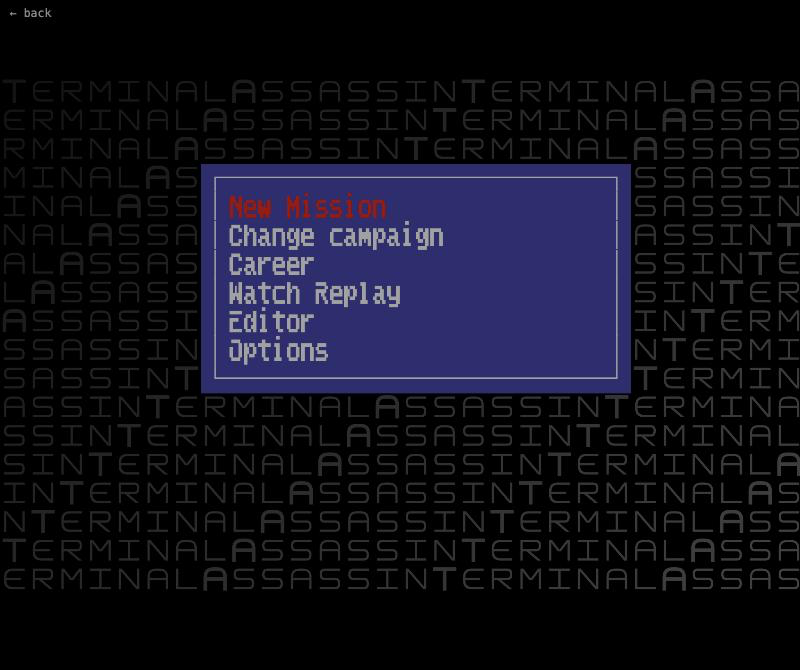
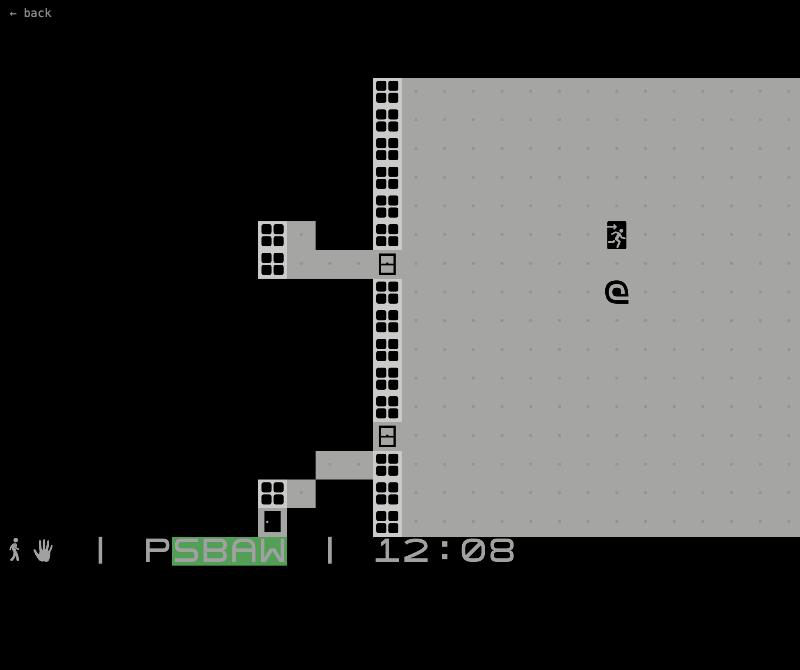

Terminal Assassin
Terminal Assassin is what happens when I play too much Hitman and then open a code editor. It is a real-time stealth and assassination game, written in Go on top of Ebitengine, but everything is drawn on a custom Unicode cell grid so it looks like it runs in a terminal.
You get a target, a map full of guards and civilians, and a lot of ways to make things go wrong. Sneak behind people to pickpocket them, knock on walls to lure guards away, change into the clothes of someone you knocked out, poison drinks, expose live power outlets, hide in lockers and drag bodies out of sight. The AI notices blood, missing people and odd noises, and raises the alarm when you get sloppy.
The game has grown into a small sandbox over the years: bows with a pull-back aim, a katana, mines, lamps with dynamic lighting, a fence who buys your loot, a replay recorder and a built-in map editor. Missions come in campaigns, and you can play the first one right here in the browser.
Controls: WASD to move, Shift to run, CapsLock to sneak, arrows to peek, E to interact, Space to use or aim, R to assassinate, Q for the inventory, Esc to pause.
Screenshots



Latest updates
- 2026-08-04 Mines trigger on fire and explosions, not only contact
- 2026-06-12 Thrown items follow a full line path and bounce off windows
- 2026-06-11 NPC melee combat with telegraphed attacks
- 2026-05-17 Added a katana
- 2026-05-16 Alarm system and AI incident overhaul
- 2026-05-04 Tick-based replay system
- 2023-08-19 First commit